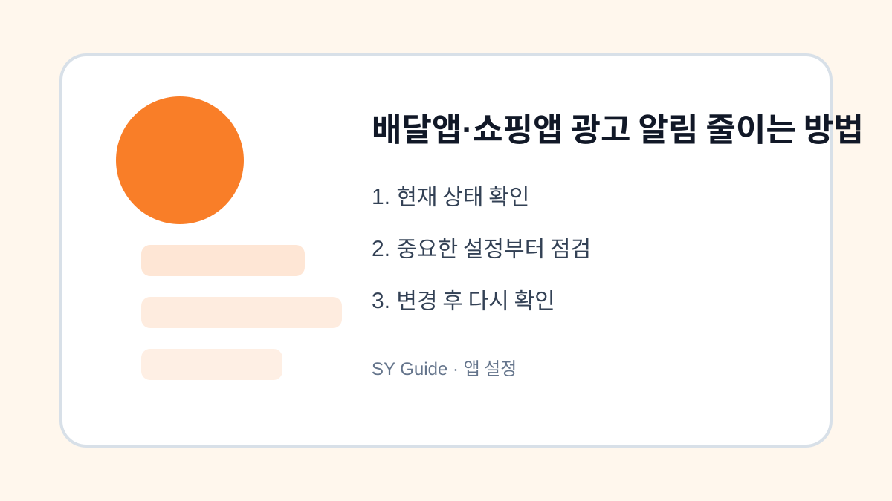

배달앱·쇼핑앱 광고 알림 줄이는 방법
주문 알림은 유지하면서 광고성 푸시와 마케팅 알림만 줄이는 현실적인 설정 방법입니다.

배달앱과 쇼핑앱 알림을 모두 꺼버리면 주문 상태나 배송 안내를 놓칠 수 있습니다. 하지만 마케팅 알림을 그대로 두면 할인, 쿠폰, 추천 상품 메시지가 계속 도착합니다. 핵심은 거래 관련 알림과 광고성 알림을 나누는 것입니다.
앱 내부 마케팅 수신 설정 확인
대부분의 앱에는 혜택 알림, 이벤트 알림, 광고성 정보 수신 설정이 따로 있습니다. 스마트폰 알림을 통째로 끄기 전에 앱 내부 설정에서 마케팅 수신 동의를 먼저 확인합니다. 주문 알림과 배송 알림은 남기고 광고성 알림만 줄이면 불편이 적습니다.
스마트폰 알림 채널 활용
안드로이드 일부 기기에서는 앱 알림을 종류별로 나눠 끌 수 있습니다. 예를 들어 주문 상태 알림은 켜고 추천 상품 알림은 끄는 식입니다. 아이폰은 앱별 알림 방식이 단순할 수 있으므로 앱 내부 설정을 더 중요하게 봐야 합니다.
| 알림 | 권장 | 이유 |
|---|---|---|
| 주문/배송 | 유지 | 필수 안내 |
| 쿠폰/혜택 | 선택 | 소비 유도 가능 |
| 추천 상품 | 끄기 | 광고성 비중 큼 |
앱 설정을 바꾸기 전 마지막 점검
- 앱 내부 마케팅 수신 설정 확인하기
- 주문과 배송 알림은 유지하기
- 추천 상품과 이벤트 알림 줄이기
- 야간 알림은 방해금지 모드 활용하기
- 한 주 사용 후 필요한 알림만 다시 켜기
알림 정리는 소비 습관에도 영향을 줍니다. 필요 없는 혜택 알림을 줄이면 충동 구매를 줄이는 데도 도움이 됩니다.
쇼핑·배달앱 알림을 줄일 상황
쇼핑앱과 배달앱은 할인, 이벤트, 배송, 결제 알림이 섞여 들어옵니다. 모든 알림을 끄기보다 주문 상태와 결제 알림은 남기고 광고성 알림만 줄이면 필요한 정보는 계속 받을 수 있습니다.
광고 알림을 줄일 때 자주 하는 실수
앱 알림을 통째로 차단하면 배송 지연이나 결제 확인 알림까지 놓칠 수 있습니다. 앱 안의 마케팅 수신 동의와 휴대폰 알림 권한을 따로 확인하는 것이 좋습니다.
배달앱·쇼핑앱 광고 알림 줄이는 관련 설정을 먼저 확인해야 하는 이유
배달앱·쇼핑앱 광고 알림 줄이는 관련 설정은 단순히 메뉴 하나를 켜고 끄는 문제가 아니라, 실제 사용 흐름에서 어떤 불편을 줄이려는지 먼저 정해야 합니다. 같은 메뉴라도 기기 제조사, 운영체제 버전, 앱 업데이트 상태에 따라 이름이 달라질 수 있으므로 현재 화면을 기준으로 차근차근 확인하는 것이 좋습니다.
쇼핑·배달앱 알림을 줄일 때 자주 생기는 실수
쇼핑·배달앱 알림을 줄일 상황을 정리할 때는 되돌리기 어려운 삭제나 계정 변경을 마지막 단계로 미루는 것이 좋습니다. 먼저 표시, 알림, 권한처럼 쉽게 복구할 수 있는 항목부터 확인하면 실수 부담을 줄일 수 있습니다.
배달앱·쇼핑앱 광고 알림 줄이는 점검 후 다시 볼 부분
쇼핑·배달앱 알림을 줄일 상황은 사용자마다 필요한 범위가 다르기 때문에, 자주 쓰는 앱과 계정부터 적용하는 편이 좋습니다. 바꾸기 전 화면과 바꾼 뒤 결과를 비교하면 어떤 설정이 실제로 도움이 됐는지 판단하기 쉽습니다.